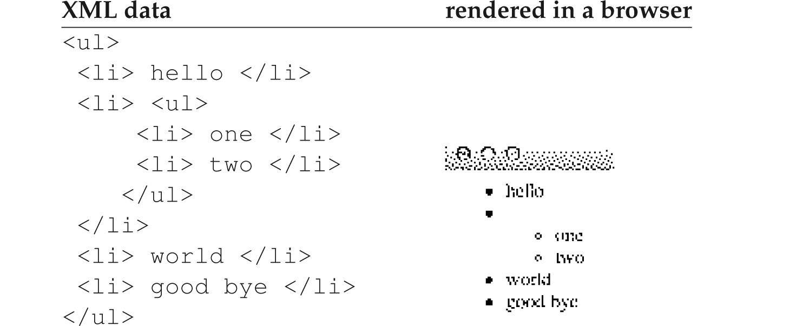

22 Project: The Commerce of XML
XML is a widely used data language. One use concerns message exchanges between programs running on different computers. For example, when you point your web browser at a web site, you are connecting a program on your computer to a program on another computer, and the latter sends XML data to the former. Once the browser receives the XML data, it renders it as an image on your computer’s monitor.
The following comparison illustrates this idea with a concrete example:

On the left, you see a piece of XML data that a web site may send to your web browser. On the right, you see how one popular browser renders this snippet graphically.
If you think XML is too old-fashioned for 2018, feel free to redo the exercise for JSON or some other modern data exchange format. The design principles remain the same.
This chapter explains the basics of processing XML as another design exercise concerning intertwined data definitions and iterative refinement. The next section starts with an informal comparison of S-expressions and XML data and uses it to formulate a full-fledged data definition. The remaining sections explain with examples how to process an S-expression of XML data.